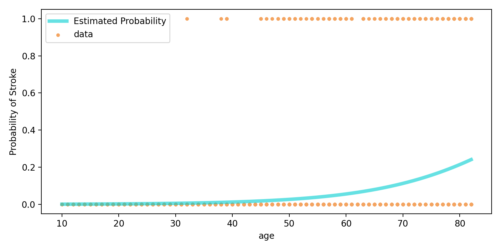
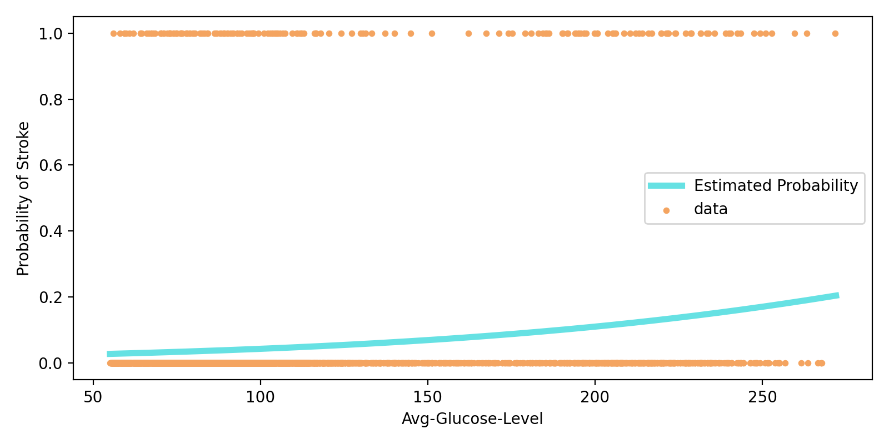
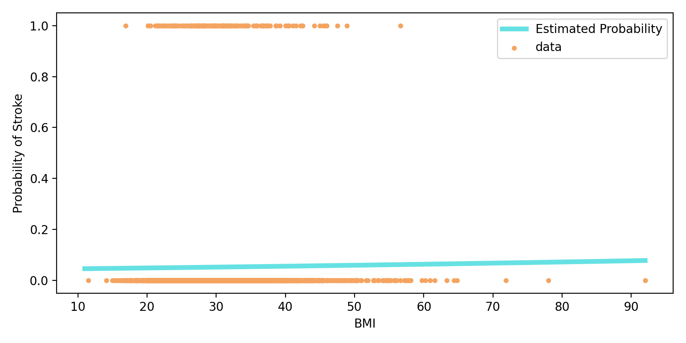

迴歸分析: 數值型變數¶
讀取與清理資料¶
資料清理
BMI為Null
Smoking status為unknown
strokedata <- read.csv(file = '../data/healthcare-dataset-stroke-data-cleanbmi.csv')
head(strokedata)
| age | hypertension | heart_disease | ever_married | work_type | avg_glucose_level | bmi | smoking_status | stroke |
|---|---|---|---|---|---|---|---|---|
| 67 | 0 | 1 | Yes | Private | 228.69 | 36.6 | formerly smoked | 1 |
| 80 | 0 | 1 | Yes | Private | 105.92 | 32.5 | never smoked | 1 |
| 49 | 0 | 0 | Yes | Private | 171.23 | 34.4 | smokes | 1 |
| 79 | 1 | 0 | Yes | Self-employed | 174.12 | 24.0 | never smoked | 1 |
| 81 | 0 | 0 | Yes | Private | 186.21 | 29.0 | formerly smoked | 1 |
| 74 | 1 | 1 | Yes | Private | 70.09 | 27.4 | never smoked | 1 |
Simple Models: 只含有一個解釋變數¶
Age¶
\(\log{\left(\frac{P[\rm{stroke}=1]}{P[\rm{stroke}=0]}\right)} = \beta_0 + \beta_{\rm{age}}x_{\rm{age}}\)
model_age = glm(stroke ~ age, data=strokedata, family=binomial(link="logit"))
summary(model_age)
Call:
glm(formula = stroke ~ age, family = binomial(link = "logit"),
data = strokedata)
Deviance Residuals:
Min 1Q Median 3Q Max
-0.7433 -0.3532 -0.2094 -0.1101 3.1489
Coefficients:
Estimate Std. Error z value Pr(>|z|)
(Intercept) -7.386557 0.413389 -17.87 <2e-16 ***
age 0.076116 0.006051 12.58 <2e-16 ***
---
Signif. codes: 0 ‘***’ 0.001 ‘**’ 0.01 ‘*’ 0.05 ‘.’ 0.1 ‘ ’ 1
(Dispersion parameter for binomial family taken to be 1)
Null deviance: 1411.0 on 3425 degrees of freedom
Residual deviance: 1180.3 on 3424 degrees of freedom
AIC: 1184.3
Number of Fisher Scoring iterations: 7

Average Glucose Level¶
\(\log{\left(\frac{P[\rm{stroke}=1]}{P[\rm{stroke}=0]}\right)} = \beta_0 + \beta_{\rm{glucose}}x_{\rm{glucose}}\)
model_glucose = glm(stroke ~ avg_glucose_level, data=strokedata, family=binomial(link="logit"))
summary(model_glucose)
Call:
glm(formula = stroke ~ avg_glucose_level, family = binomial(link = "logit"),
data = strokedata)
Deviance Residuals:
Min 1Q Median 3Q Max
-0.6635 -0.3162 -0.2829 -0.2613 2.6724
Coefficients:
Estimate Std. Error z value Pr(>|z|)
(Intercept) -4.109807 0.188774 -21.771 < 2e-16 ***
avg_glucose_level 0.010115 0.001286 7.866 3.66e-15 ***
---
Signif. codes: 0 ‘***’ 0.001 ‘**’ 0.01 ‘*’ 0.05 ‘.’ 0.1 ‘ ’ 1
(Dispersion parameter for binomial family taken to be 1)
Null deviance: 1411.0 on 3425 degrees of freedom
Residual deviance: 1355.4 on 3424 degrees of freedom
AIC: 1359.4
Number of Fisher Scoring iterations: 6

BMI¶
\(\log{\left(\frac{P[\rm{stroke}=1]}{P[\rm{stroke}=0]}\right)} = \beta_0 + \beta_{\rm{bmi}}x_{\rm{bmi}}\)
model_bmi = glm(stroke ~ bmi, data=strokedata, family=binomial(link="logit"))
summary(model_bmi)
Call:
glm(formula = stroke ~ bmi, family = binomial(link = "logit"),
data = strokedata)
Deviance Residuals:
Min 1Q Median 3Q Max
-0.4043 -0.3322 -0.3266 -0.3220 2.4642
Coefficients:
Estimate Std. Error z value Pr(>|z|)
(Intercept) -3.104671 0.321897 -9.645 <2e-16 ***
bmi 0.006975 0.010207 0.683 0.494
---
Signif. codes: 0 ‘***’ 0.001 ‘**’ 0.01 ‘*’ 0.05 ‘.’ 0.1 ‘ ’ 1
(Dispersion parameter for binomial family taken to be 1)
Null deviance: 1411.0 on 3425 degrees of freedom
Residual deviance: 1410.5 on 3424 degrees of freedom
AIC: 1414.5
Number of Fisher Scoring iterations: 5

bmi的數值對於預測中風沒有什麼資訊
可以看到\(\hat{\beta}_{\rm{bmi}}\)非常接近0
\(\hat{\beta}_{\rm{bmi}}\) 的z-test p-value很大
下一個部份會利用Deviance 來決定是否要捨棄bmi這個解釋變數
Model Selection: with/without bmi¶
Full Model: \(\log{\left(\frac{P[\rm{stroke}=1]}{P[\rm{stroke}=0]}\right)} = \beta_0 + \beta_{\rm{age}}x_{\rm{age}} + \beta_{\rm{glucose}}x_{\rm{glucose}} + \beta_{\rm{bmi}}x_{\rm{bmi}}\)
Reduced Model: \(\log{\left(\frac{P[\rm{stroke}=1]}{P[\rm{stroke}=0]}\right)} = \beta_0 + \beta_{\rm{age}}x_{\rm{age}} + \beta_{\rm{glucose}}x_{\rm{glucose}}\)
model_full = glm(stroke ~ age + avg_glucose_level + bmi, data=strokedata, family=binomial(link="logit"))
summary(model_full)
Call:
glm(formula = stroke ~ age + avg_glucose_level + bmi, family = binomial(link = "logit"),
data = strokedata)
Deviance Residuals:
Min 1Q Median 3Q Max
-0.9252 -0.3444 -0.1970 -0.1050 3.2052
Coefficients:
Estimate Std. Error z value Pr(>|z|)
(Intercept) -8.158626 0.620082 -13.157 < 2e-16 ***
age 0.073656 0.006365 11.572 < 2e-16 ***
avg_glucose_level 0.005208 0.001350 3.858 0.000114 ***
bmi 0.009182 0.012712 0.722 0.470102
---
Signif. codes: 0 ‘***’ 0.001 ‘**’ 0.01 ‘*’ 0.05 ‘.’ 0.1 ‘ ’ 1
(Dispersion parameter for binomial family taken to be 1)
Null deviance: 1411.0 on 3425 degrees of freedom
Residual deviance: 1163.3 on 3422 degrees of freedom
AIC: 1171.3
Number of Fisher Scoring iterations: 7
model_reduce = glm(stroke ~ age + avg_glucose_level, data=strokedata, family=binomial(link="logit"))
summary(model_reduce)
Call:
glm(formula = stroke ~ age + avg_glucose_level, family = binomial(link = "logit"),
data = strokedata)
Deviance Residuals:
Min 1Q Median 3Q Max
-0.9514 -0.3432 -0.1975 -0.1068 3.1972
Coefficients:
Estimate Std. Error z value Pr(>|z|)
(Intercept) -7.845862 0.434271 -18.07 < 2e-16 ***
age 0.072708 0.006176 11.77 < 2e-16 ***
avg_glucose_level 0.005442 0.001311 4.15 3.33e-05 ***
---
Signif. codes: 0 ‘***’ 0.001 ‘**’ 0.01 ‘*’ 0.05 ‘.’ 0.1 ‘ ’ 1
(Dispersion parameter for binomial family taken to be 1)
Null deviance: 1411.0 on 3425 degrees of freedom
Residual deviance: 1163.8 on 3423 degrees of freedom
AIC: 1169.8
Number of Fisher Scoring iterations: 7
Likelihood-Ratio Test¶
Full Model與Reduced Model的差異可以轉換成 \(H_0: \beta_{\rm{bmi}} = 0\)
anova(model_reduce, model_full, test="LRT")
| Resid. Df | Resid. Dev | Df | Deviance | Pr(>Chi) |
|---|---|---|---|---|
| 3423 | 1163.793 | NA | NA | NA |
| 3422 | 1163.279 | 1 | 0.5142007 | 0.4733261 |
根據Deviance的p-value=0.4733
不能拒絕 \(H_0\)，所以最終模型將會捨棄掉bmi的變數
Final Selection:¶
\(\log{\left(\frac{P[\rm{stroke}=1]}{P[\rm{stroke}=0]}\right)} = \beta_0 + \beta_{\rm{age}}x_{\rm{age}} + \beta_{\rm{glucose}}x_{\rm{glucose}}\)
數值型轉換成類別型¶
為了在綜合型Model能做一個簡單的分類，我們希望能將數值型的age與glucose轉換成類別型
Age¶
資料處理¶
strokedata$age_greater_50 <- ifelse(strokedata$age>50, 1, 0)
strokedata$age_greater_60 <- ifelse(strokedata$age>60, 1, 0)
strokedata$age_greater_70 <- ifelse(strokedata$age>70, 1, 0)
strokedata$age_greater_80 <- ifelse(strokedata$age>80, 1, 0)
head(strokedata)
| age | hypertension | heart_disease | ever_married | work_type | avg_glucose_level | bmi | smoking_status | stroke | age_greater_50 | age_greater_60 | age_greater_70 | age_greater_80 |
|---|---|---|---|---|---|---|---|---|---|---|---|---|
| 67 | 0 | 1 | Yes | Private | 228.69 | 36.6 | formerly smoked | 1 | 1 | 1 | 0 | 0 |
| 80 | 0 | 1 | Yes | Private | 105.92 | 32.5 | never smoked | 1 | 1 | 1 | 1 | 0 |
| 49 | 0 | 0 | Yes | Private | 171.23 | 34.4 | smokes | 1 | 0 | 0 | 0 | 0 |
| 79 | 1 | 0 | Yes | Self-employed | 174.12 | 24.0 | never smoked | 1 | 1 | 1 | 1 | 0 |
| 81 | 0 | 0 | Yes | Private | 186.21 | 29.0 | formerly smoked | 1 | 1 | 1 | 1 | 1 |
| 74 | 1 | 1 | Yes | Private | 70.09 | 27.4 | never smoked | 1 | 1 | 1 | 1 | 0 |
Model-Age-Full:¶
\(\log{\left(\frac{P[\rm{stroke}=1]}{P[\rm{stroke}=0]}\right)} = \beta_0 + \beta_{\rm{age>50}}x_{\rm{age>50}} + \beta_{\rm{age>60}}x_{\rm{age>60}} + \beta_{\rm{age>70}}x_{\rm{age>70}} + \beta_{\rm{age>80}}x_{\rm{age>80}}\)
model_age_cate_full = glm(stroke ~ age_greater_50 + age_greater_60 + age_greater_70 + age_greater_80, data=strokedata, family=binomial(link="logit"))
summary(model_age_cate_full)
Call:
glm(formula = stroke ~ age_greater_50 + age_greater_60 + age_greater_70 +
age_greater_80, family = binomial(link = "logit"), data = strokedata)
Deviance Residuals:
Min 1Q Median 3Q Max
-0.6959 -0.4063 -0.1427 -0.1427 3.0308
Coefficients:
Estimate Std. Error z value Pr(>|z|)
(Intercept) -4.5827 0.2369 -19.344 < 2e-16 ***
age_greater_50 1.6891 0.2952 5.721 1.06e-08 ***
age_greater_60 0.4408 0.2457 1.794 0.07288 .
age_greater_70 0.8048 0.2148 3.746 0.00018 ***
age_greater_80 0.3534 0.2837 1.246 0.21292
---
Signif. codes: 0 ‘***’ 0.001 ‘**’ 0.01 ‘*’ 0.05 ‘.’ 0.1 ‘ ’ 1
(Dispersion parameter for binomial family taken to be 1)
Null deviance: 1411.0 on 3425 degrees of freedom
Residual deviance: 1212.1 on 3421 degrees of freedom
AIC: 1222.1
Number of Fisher Scoring iterations: 7
根據z-test的p-value，無法拒絕下面的\(H_0\)
\(H_0: \beta_{\rm{age>60}} = 0\)
\(H_0: \beta_{\rm{age>80}} = 0\)
Model-Age-Selected:¶
\(\log{\left(\frac{P[\rm{stroke}=1]}{P[\rm{stroke}=0]}\right)} = \beta_0 + \beta_{\rm{age>50}}x_{\rm{age>50}} + \beta_{\rm{age>70}}x_{\rm{age>70}}\)
model_age_cate_selected = glm(stroke ~ age_greater_50 + age_greater_70, data=strokedata, family=binomial(link="logit"))
summary(model_age_cate_selected)
Call:
glm(formula = stroke ~ age_greater_50 + age_greater_70, family = binomial(link = "logit"),
data = strokedata)
Deviance Residuals:
Min 1Q Median 3Q Max
-0.6119 -0.3628 -0.1427 -0.1427 3.0308
Coefficients:
Estimate Std. Error z value Pr(>|z|)
(Intercept) -4.5827 0.2369 -19.344 < 2e-16 ***
age_greater_50 1.8946 0.2668 7.102 1.23e-12 ***
age_greater_70 1.1077 0.1682 6.585 4.54e-11 ***
---
Signif. codes: 0 ‘***’ 0.001 ‘**’ 0.01 ‘*’ 0.05 ‘.’ 0.1 ‘ ’ 1
(Dispersion parameter for binomial family taken to be 1)
Null deviance: 1411.0 on 3425 degrees of freedom
Residual deviance: 1216.8 on 3423 degrees of freedom
AIC: 1222.8
Number of Fisher Scoring iterations: 7
Average Glucose Level¶
資料處理¶
strokedata$glc_greater_80 <- ifelse(strokedata$avg_glucose_level>80, 1, 0)
strokedata$glc_greater_110 <- ifelse(strokedata$avg_glucose_level>110, 1, 0)
strokedata$glc_greater_160 <- ifelse(strokedata$avg_glucose_level>160, 1, 0)
head(strokedata)
| age | hypertension | heart_disease | ever_married | work_type | avg_glucose_level | bmi | smoking_status | stroke | age_greater_50 | age_greater_60 | age_greater_70 | age_greater_80 | glc_greater_80 | glc_greater_110 | glc_greater_160 |
|---|---|---|---|---|---|---|---|---|---|---|---|---|---|---|---|
| 67 | 0 | 1 | Yes | Private | 228.69 | 36.6 | formerly smoked | 1 | 1 | 1 | 0 | 0 | 1 | 1 | 1 |
| 80 | 0 | 1 | Yes | Private | 105.92 | 32.5 | never smoked | 1 | 1 | 1 | 1 | 0 | 1 | 0 | 0 |
| 49 | 0 | 0 | Yes | Private | 171.23 | 34.4 | smokes | 1 | 0 | 0 | 0 | 0 | 1 | 1 | 1 |
| 79 | 1 | 0 | Yes | Self-employed | 174.12 | 24.0 | never smoked | 1 | 1 | 1 | 1 | 0 | 1 | 1 | 1 |
| 81 | 0 | 0 | Yes | Private | 186.21 | 29.0 | formerly smoked | 1 | 1 | 1 | 1 | 1 | 1 | 1 | 1 |
| 74 | 1 | 1 | Yes | Private | 70.09 | 27.4 | never smoked | 1 | 1 | 1 | 1 | 0 | 0 | 0 | 0 |
Model-Glucose-Full:¶
\(\log{\left(\frac{P[\rm{stroke}=1]}{P[\rm{stroke}=0]}\right)} = \beta_0 + \beta_{\rm{glc>80}}x_{\rm{glc>80}} + \beta_{\rm{glc>110}}x_{\rm{glc>110}} + \beta_{\rm{glc>160}}x_{\rm{glc>160}}\)
model_glc_cate_full = glm(stroke ~ glc_greater_80 + glc_greater_110 + glc_greater_160, data=strokedata, family=binomial(link="logit"))
summary(model_glc_cate_full)
Call:
glm(formula = stroke ~ glc_greater_80 + glc_greater_110 + glc_greater_160,
family = binomial(link = "logit"), data = strokedata)
Deviance Residuals:
Min 1Q Median 3Q Max
-0.5350 -0.2945 -0.2932 -0.2632 2.5999
Coefficients:
Estimate Std. Error z value Pr(>|z|)
(Intercept) -3.1161 0.1558 -19.995 < 2e-16 ***
glc_greater_80 -0.2289 0.2152 -1.064 0.287
glc_greater_110 0.2195 0.2636 0.833 0.405
glc_greater_160 1.2538 0.2538 4.940 7.82e-07 ***
---
Signif. codes: 0 ‘***’ 0.001 ‘**’ 0.01 ‘*’ 0.05 ‘.’ 0.1 ‘ ’ 1
(Dispersion parameter for binomial family taken to be 1)
Null deviance: 1411.0 on 3425 degrees of freedom
Residual deviance: 1348.9 on 3422 degrees of freedom
AIC: 1356.9
Number of Fisher Scoring iterations: 6
根據z-test的p-value，無法拒絕下面的\(H_0\)
\(H_0: \beta_{\rm{glc>80}} = 0\)
\(H_0: \beta_{\rm{glc>110}} = 0\)
Model-Glucose-Selected:¶
\(\log{\left(\frac{P[\rm{stroke}=1]}{P[\rm{stroke}=0]}\right)} = \beta_0 + \beta_{\rm{glc>160}}x_{\rm{glc>160}}\)
model_glc_cate_selected = glm(stroke ~ glc_greater_160, data=strokedata, family=binomial(link="logit"))
summary(model_glc_cate_selected)
Call:
glm(formula = stroke ~ glc_greater_160, family = binomial(link = "logit"),
data = strokedata)
Deviance Residuals:
Min 1Q Median 3Q Max
-0.5350 -0.2799 -0.2799 -0.2799 2.5532
Coefficients:
Estimate Std. Error z value Pr(>|z|)
(Intercept) -3.22030 0.09636 -33.420 <2e-16 ***
glc_greater_160 1.34850 0.16203 8.323 <2e-16 ***
---
Signif. codes: 0 ‘***’ 0.001 ‘**’ 0.01 ‘*’ 0.05 ‘.’ 0.1 ‘ ’ 1
(Dispersion parameter for binomial family taken to be 1)
Null deviance: 1411.0 on 3425 degrees of freedom
Residual deviance: 1350.3 on 3424 degrees of freedom
AIC: 1354.3
Number of Fisher Scoring iterations: 6
Final Selection¶
\(\log{\left(\frac{P[\rm{stroke}=1]}{P[\rm{stroke}=0]}\right)} = \beta_0 + \beta_{\rm{age>50}}x_{\rm{age>50}} + \beta_{\rm{age>70}}x_{\rm{age>70}} + \beta_{\rm{glc>160}}x_{\rm{glc>160}}\)
model_cate_final = glm(stroke ~ age_greater_50 + age_greater_70 + glc_greater_160, data=strokedata, family=binomial(link="logit"))
summary(model_cate_final)
Call:
glm(formula = stroke ~ age_greater_50 + age_greater_70 + glc_greater_160,
family = binomial(link = "logit"), data = strokedata)
Deviance Residuals:
Min 1Q Median 3Q Max
-0.7632 -0.3276 -0.1377 -0.1377 3.0539
Coefficients:
Estimate Std. Error z value Pr(>|z|)
(Intercept) -4.6538 0.2380 -19.557 < 2e-16 ***
age_greater_50 1.7558 0.2695 6.515 7.28e-11 ***
age_greater_70 1.0429 0.1698 6.140 8.23e-10 ***
glc_greater_160 0.7707 0.1699 4.536 5.72e-06 ***
---
Signif. codes: 0 ‘***’ 0.001 ‘**’ 0.01 ‘*’ 0.05 ‘.’ 0.1 ‘ ’ 1
(Dispersion parameter for binomial family taken to be 1)
Null deviance: 1411.0 on 3425 degrees of freedom
Residual deviance: 1197.3 on 3422 degrees of freedom
AIC: 1205.3
Number of Fisher Scoring iterations: 7
相比於純數值型的final selection(AIC=1169.8)，還是比較不好